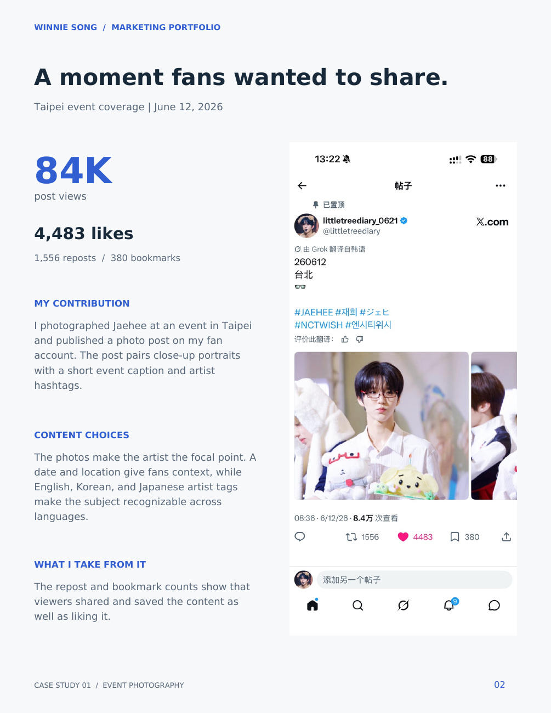
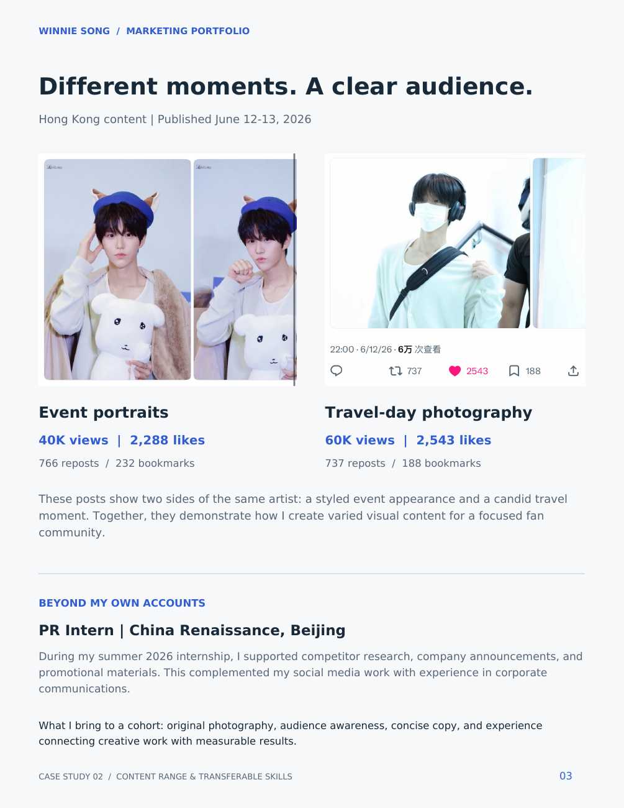
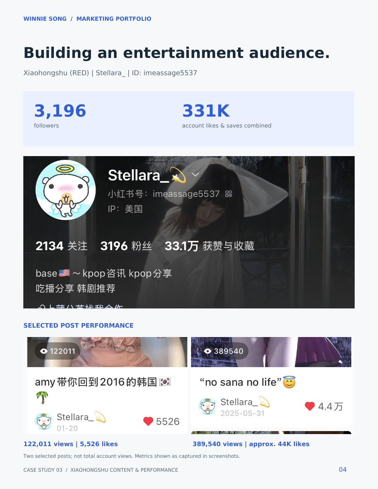

Content made for a community.
I create celebrity photography and entertainment content for communities on X and Xiaohongshu. My work combines original images, concise copy, and audience awareness.
Visit @littletreediary ↗ · Visit @Wunder_Liyu ↗
Taipei event photography
I photographed Jaehee at an event in Taipei and published a photo post with event context and multilingual artist hashtags. The selected post recorded approximately 84K views, 4,483 likes, 1,556 reposts, and 380 bookmarks.

Hong Kong: event and travel moments
Two posts present different sides of the same artist. Event portraits recorded approximately 40K views and 2,288 likes; travel-day photography recorded approximately 60K views and 2,543 likes. Together, these examples show my ability to vary content while maintaining a clear audience focus.

Xiaohongshu entertainment content
My portfolio records 3,196 followers and approximately 331K combined account likes and saves for Stellara_ (ID: imeassage5537). Two selected posts recorded 122,011 and 389,540 views respectively.

All figures reflect the screenshots in my September 2026 portfolio, not current totals. Rounded views are approximate; combined post views are not unique audience reach. Selected examples do not represent total account performance.
Open complete portfolio (PDF) ↗